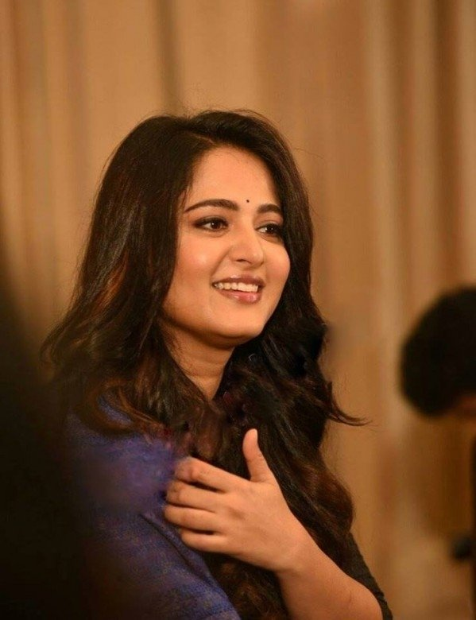

Sweety Shetty (born 7 November 1981), known as Anushka Shetty by her stage name, is an Indian on screen actress and model who works mainly in the Telugu and Tamil film industries. She has won many recognitions from eight nominations, including three CineMAA Awards, a Nandi Award, TN State Film Awards and three Filmfare Awards.
Early Life:
Anushka is an ethnic Tuluva from the landed Bellipady Uramalu Guthu family, born in Mangalore, Karnataka. Her parents are A.N Vittal Shetty and Prafulla . She has two brothers,Sai Ramesh Shetty who is a cosmetic surgeon and Gunaranjan Shetty.
Anushka completed her schooling at Mount Carmel School, Bangalore. Also, she was a yoga teacher who was educated under Bharat Thakur.
Film Vocation:
She made her debut with Telugu 2005 film Super, which brought her the award for Telugu as the best supporting actress. She appeared in S. S. Rajamouli's Vikramarkudu the next year which was a major industrial success. More milestones were also rendered in the releases Lakshyam (2007) and Souryam (2008) and Chintakayala Ravi (2008). Shetty played dual roles in Arundhati's dark fantasy in 2009, earned her critical acclaim and many awards, including her first Best Actress Filmfare Award – Telugu, Nandi Award, Best Actress Cinemaa Award.
Anushka also achieved success in Tamil cinema in the 2010 with starring roles in action films such as Vettaikaran (2009), Singam (2010), Singam-2 (2013), Yennai Arindhaal (2015), and Si3 (2017), all of which were important commercial successes. With her leading roles in the dramas Vaanam (2011), Deiva Thirumagal (2011) and Inji Iduppazhagi (2015), she continued to attract acclaim from critics. In the 2015 epic historical narrative Rudramadevi that won her the third Filmfare Award for Best Actress-Telugu, she portrayed the titular Queen.
Anushka's portrayal of Princess Devasena in the series Baahubali (2015–17) has earned widespread acclaim. While The Beginning (2015) is the fourth highest-scale Indian film, its sequel The Conclusion (2017) was the highest-scale Indian film ever, making it the highest-paid actress in South Indian Cinema.
Experimental roles and future ventures (2017–present):
Her first movie release in 2017 was Si3,in which she had been partnered for the third time in her career with Surya. In Om Namo Venkatesaya Shetty depicted Krishnamma, a character influenced by the Goda Devi. Baahubali 2: The Conclusion was her next release.
For her portrait of Yuvarani Devasena, Anushka received a positive response. Critics praised the character of Devasena and Anushka depiction was similarly commended. Devasena choosing her partner and being given the right to refuse a marriage alliance, She can be her own person and grow into a powerful personality that doesn't fall down even though she is chained in a palace courtyard for 25 years.